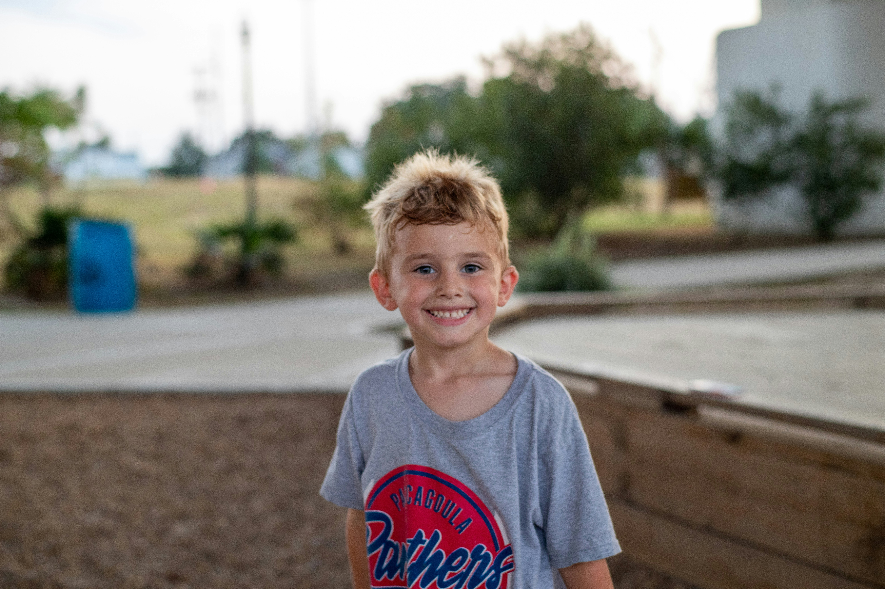

علمنى
سالم فؤاد
الصف الخامس
العمر 12 سنة
العام الدراسي 2025
اعلا تحصيل88جيد

نتائج الدراسة
المادة
العلامة
اللغة العربية
85%100
الرياضيات
85%100
العلوم
80%100
الإنجليزي
65%100
الاجتماعيات
87%100
الرسم
80%100
لكي تُصبح متفوقًا
المراقبة من الاهل
الابتعاد بقدر المستطاع عن الاجهزة الالكترونية
تحفيز الطالب على التعلم من خلال الانشطة
نصائح التقدم
يُنصح الطالب بالمتابعة اليومية، والتركيز على المواد الأساسية، وتنظيم وقت الدراسة.